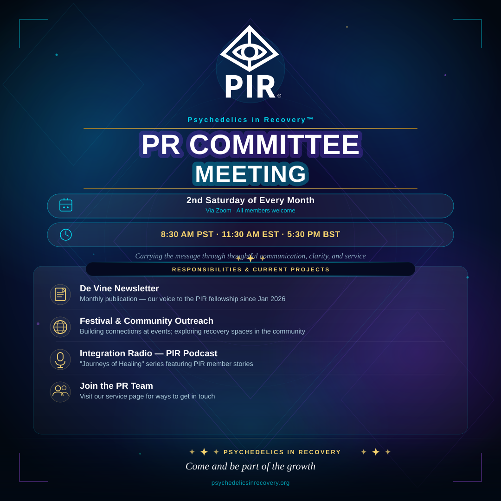
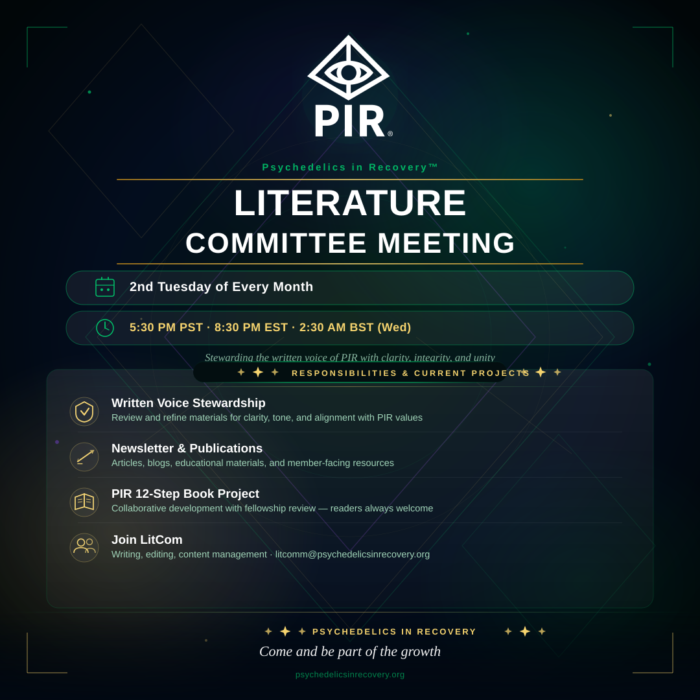

Fellowship announcements, open service positions, and how to get involved.
| Role | Committee | Description | Schedule |
|---|---|---|---|
| Digital Artist | PR Committee | Create digital media content for PIR across multiple platforms including podcasts, website, newsletter, and literature. | Ongoing |
| Copy Editor | PR Committee – Newsletter | Edit member and committee contributions to De Vine; conduct interviews; assist with artwork and content choices. | Ongoing |
| Readers | 12-Step Committee | Read content, provide direct feedback, and attend 12-Step Book Committee meetings. | Ongoing — contact committee for dates & times |
All PIR members are welcome. Share these in your WhatsApp groups, meetings, or anywhere fellowship gathers.
PR Committee · 2nd Saturday

Literature Committee · 2nd Tuesday
